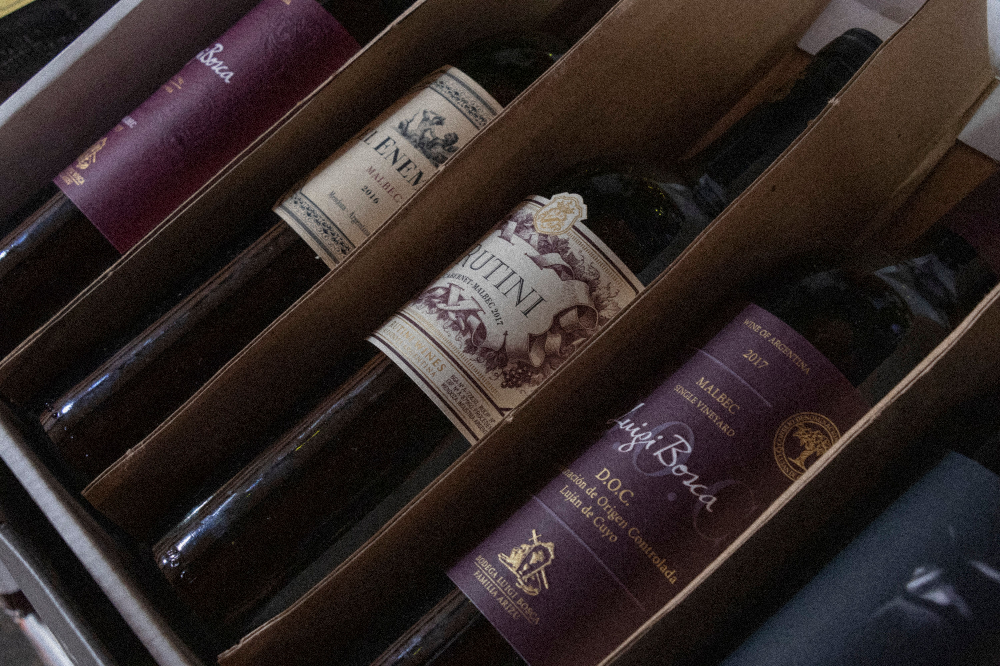

Vinhos selecionados, atendimento que faz diferença
Há mais de 15 anos ajudamos nossos clientes a encontrar o vinho certo para cada momento — do jantar em família à ocasião mais especial.
Por que escolher a Vinheria Agnello?
Vendedores especialistas em harmonização
Vinhos nacionais e internacionais selecionados
Armazenagem cuidadosa, preservando cada garrafa
